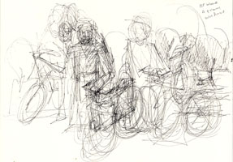

| Introduction |
| The Massacre |
| Northern Fields |
| Inside the Village |
| First Wave |
| Second Wave |
| Third Wave |
| Fourth Wave |
| Sixth |
| Seventh |
| Ninth |
| Roster of Victims |
| Witnesses |
| Artist's Notes |
| Contact me |
| ="pointer-events:none;cursor:default;" href="http://www.art.net/samia">Exit |
MEMORIAL on the 50th Anniversary of the Kafr Qasem Massacre
Those Who Were Killed In the First Wave

On the left is a sketch of the four workers as they neared the soldiers.
On the right are the two who died: Ahmad Freij, 35 years, and Uthman Tah, 30 years.
The first wave consisted of four stone quarry workers returning home on bicycles from work in the Israeli town of Patah Tikva. At five minutes till five, they reached where the soldiers had positioned themselves on the western road to the village and thus before the curfew was to begin. The soldiers must have been fevered with murder ,as is indicated by their own witness in court. [See second section below for witness of one border police.]
When the workers neared sergeant Shalom Aufer and his unit, they dismounted. Walking, they led their bicycles as they fearfully approached the soldiers and greeted them in Hebrew saying: �Shalom katseen!� Sergeant Shalom Awfer asked them if they were happy, and in one voice, they said yes. He then ordered them to stand in one line.
The order to shoot was given by sergeant Shalom Awfer who yelled: �Harvest them!� In response to the order, shots rained on the workers, and they fell. Then the sergeant yelled, �enough! They are all dead and it is a shame to waste bullets on them.� This was essentially the description recorded by Emil Habibi, the distinguished and beloved Palestinian writer. Habibi was a comrade of Tawfiq Touby who had, with Meyer Velner and other members of the Communist Party, confronted the Israeli Knesset with the heinous deed. Tawfik Touby and his comrades were the first to break the blockade of the town by the military, and enter Kafr Qasem. He interviewed witnesses spending considerable time there and returning often. Tawfik's press release describing the massacre which was distributed internationally broke the story on November 23, 1956, a bit more than three weeks after the massacre.
Two of the four quarry workers were killed. They both had families. Ahmad had four children and Uthman had eight children. One of the two men who escaped was Ahmad's brother, Mahmoud, who suffered two wounds but remained still till after all the waves of the massacre had ended. Then he found his way to safety. The second to escape was Abdallah Budeir who also remained still, hiding at times behind some loose sheep until the end. Habibi tells that both men witnessed the entire massacre taking place at the western road to the village. Habibi also mentions that witnesses saw the soldiers distance themselves from the scene of their crime so that the next batch of victims would not be warned by the sight of dead bodies.
The poet Tawfiq Ziad describes attitudes of the soldiers willing to collaborate with the criminal orders by quoting from the records of the Israeli military court that conducted a farcical trial.**
Witnesses told me that they had seen the location and the blood of their relatives a few days after the massacre when the curfew was lifted and they could leave their homes.
Excerpts from the documents of the military court quoted by Tawfiq Ziad.**
"...At a distance of tens of meters from the last house in the village, on the edge of the road, stood the men of the Border police awaiting their victims. What was their attitude at that point. let us listen in to what one of them says. His name is David Goldveld and his is 21 years old. He was born and educated in the country and is a good example of what his comrades in the border police were like. This David was one of the witnesses in the military trial.(Excerpt from court records begins here:)
The lawyer Hasid: Is it true that you worked in this country all your life and that you feel that the Arabs are enemies of Israel?
The witness: Yes.
The lawyer Hasid: It it true that you feel this towards both the Arabs in Israel and the Arabs outside of it?
The witness: Yes, I do not distinguish.
The lawyer hasid: Is it true that you felt that if you did not obey the order (to kill every Arab) in Kafr Qasem if you saw them outside their homes, that you would be a traitor to the spirit of your education in the military and in the border police?
The witness: Yes.
The lawyer Hasid: If you were, for example, in the streets of Yafa during one of the days of the war and you found an Arab, would you shoot at him?
The witness: I do not know.
The Judge Halevi: If the following happened to you in Kafr Qasem: After five o'clock a woman called you and you were sure that she did not pose any threat nor was she she a danger to security, and let us say that that was at 5:30 for example, and if this woman was ten meters away from her home and was requesting your permission to enter her house, what would you do?
The witness: I would not permit her.
The judge Halevi: What would you do?
The witness: If she was in the street...I would shoot her.
The judge Halevi: But there would be no danger whatsoever. This would be only someone by some mistake or by the fact that they did not know of the curfew, would face you and wanted permission in crossing the road...The question is that in spite of all this, You would kill each one, or would you distinguish...and stop yourself from killing? Say in specific situations?
The witness: I did not distinguish.
The Judge Halevi: You would kill each and every one?
The witness: Yes.
The Judge Halevi: Even if that person was a woman...or a child?
The witness: Yes.
(End Quote)
It is in this spirit that those who would kill awaited their victims so that they would 'take care of them.'
Web posting and author: Samia A. Halaby, October 2006.
** Book title: A Special Report on the Kafr Qasem Massacre
Author: Written by the national leader and Poet Tawfik Ziad, 1966. Published by The Democratic Party for Peace and Equality, Kafr Qasem 1999.
Quotation translated by the author of this cite Tawfik Touby. Page 11th to 13th page.
![[Art on the Net]](/images/artnet_button.gif)